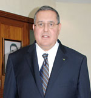

Salaheddine Kadmiri, PDG de Schiele Maroc
il a travaillé pour le ministère de l’industrie 2 ans avant de se mettre à son propre compte. En 1985 il crée avec son frère Ceac, spécialisée dans la production de compteurs électriques.

Salaheddine Kadmiri, PDG de Schiele Maroc et colistier de Meriem Bensalah, prétendant au poste de vice-président de la Confédération générale des entreprises du Maroc (CGEM) qui connaîtra son assemblée générale élective le 16 mai, n’est pas venu aux affaires par hasard. Son père était entrepreneur et industriel et une partie de la famille était déjà dans le domaine de l’électricité. Au ministère du commerce et de l’industrie où il a passé deux années comme «civiliste», il a eu la chance de travailler sur la libéralisation des secteurs de l’emballage et des produits chimiques, au moment de la mise en œuvre du plan de réajustement structurel. Mais la trajectoire de Salaheddine Kamiri repose, hormis bien sûr l’assistance familiale, sur le travail et le courage. En témoigne son premier marché qui portait sur toute la partie électricité de la Mosquée Hassan II de Casablanca, alors que son entreprise de distribution de matériels électriques venait à peine d’être créée. Et ce n’est pas là le seul défi de cet entrepreneur né en 1959 à Fès dans une famille de 8 enfants dont il est le benjamin.
Ingénieur généraliste, il a effectué ses premiers pas au ministère du commerce et de l’industrie
Sur son parcours scolaire, Salaheddine Kadmiri dit avoir été un enfant comme les autres, même s’il a été un produit de la Mission française. Il s’en explique : «A l’époque, non seulement cela ne coûtait pas grand-chose mais c’était ouvert à tout le monde». Bref, après un bac sciences maths en 1977, il choisit, sur les conseils de quelques amis, d’aller au lycée Poincaré à Nancy pour ses prépas. Et ce sera à l’Ecole centrale de Paris qu’il suit un cursus d’ingénieur généraliste.
Il ne s’attardera pas en France après l’obtention de son diplôme et revient rapidement au Maroc. C’est là qu’il intègre le ministère du commerce et de l’industrie pour être dans une cellule directement encadrée par feu Abderrazak Moussadak. Les problématiques macroéconomiques auxquelles il sera confronté lui permettront d’être mieux préparé pour naviguer dans le monde des affaires.
En 1985, après ses deux années de civiliste et au lieu de prendre le relais de son père, il préfère créer, avec son frère, «Construction électrique appareillage de comptage» (Ceac), unité industrielle basée à Fès et spécialisée dans la fabrication et la commercialisation des compteurs électriques. Il pensait avoir fait un bon choix en s’attaquant à un secteur moderne et pointu. Mais la partie va être difficile car, après un gros investissement de 20 MDH, il fallait convaincre les régies de distribution d’eau et d’électricité de faire confiance à une autre technologie alors qu’ils se fournissaient chez des étrangers ou des revendeurs appartenant à des réseaux bien établis. Il finira, néanmoins, par se faire accepter d’abord par la régie de Fès puis à Rabat et El Jadida. C’est le début d’une saga car l’entreprise va bientôt compter 250 personnes.
Tout en continuant à gérer Ceac, Salaheddine Kadmiri s’installe à Casablanca dès 1990. Il flaire la bonne affaire : le rachat du nom de Schiele Maroc pour s’investir dans le domaine de l’automatisme, l’électricité industrielle, les armoires et les tableaux électriques. Cela ne se fera qu’en 1995. Il se désengage alors de sa première société pour se concentrer sur la nouvelle entité. C’est à ce moment-là qu’on lui confie le marché de l’électricité de la Mosquée Hassan II. Il va travailler d’arrache-pied pour honorer cet engagement car il sait qu’en cas d’échec, il signerait l’arrêt de mort de l’entreprise qu’il venait de créer. Aujourd’hui, le groupe Schiele emploie 700 personnes dont 150 ingénieurs et réalise un chiffre d’affaires annuel de 700 MDH. Mais le groupe qui agit aussi bien dans la fabrication, la distribution que dans l’ingénierie a créé des filiales dans des domaines comme l’éclairage, la fabrication de cartes électriques, le traitement des supports électriques et les télécoms…
Il mène le combat contre les retards de paiement
A côté de ses activités, Salaheddine Kadmiri va aussi s’investir dans l’associatif et sera un des fondateurs et premier président de la Fédération nationale de l’électricité et de l’électronique au Maroc (Fenelec). Cela va être un moment crucial pour la profession qui va d’abord avoir de la visibilité au niveau de l’environnement économique national puis international. Et puis, elle allait, enfin, devenir un interlocuteur des pouvoirs publics qui appelait de leurs vœux à la structuration du secteur.
Le PDG de Schiele va aussi être actif à la CGEM dont il est membre depuis une douzaine d’années. Son dynamisme lui permet de coiffer la présidence de la commission PME. Durant son mandat, son cheval de bataille fut les délais de paiement. Il a durement bataillé pour faire adopter la loi y afférente, mais les décrets d’application ne sont toujours pas publiés. Il en parle avec aigreur : «Aujourd’hui, le délai moyen est de six mois et c’est proprement scandaleux. Et il y a des sociétés qui ont non seulement des problèmes de trésorerie mais leur développement est totalement étouffé par ces retards dans le recouvrement. Schiele Maroc investit entre 20 et 30 MDH par an. Sans ce problème, elle aurait pu faire le double». Son futur poste de vice-président lui permettra peut-être de faire entendre la voix des PME au delà des arcanes ministériels.